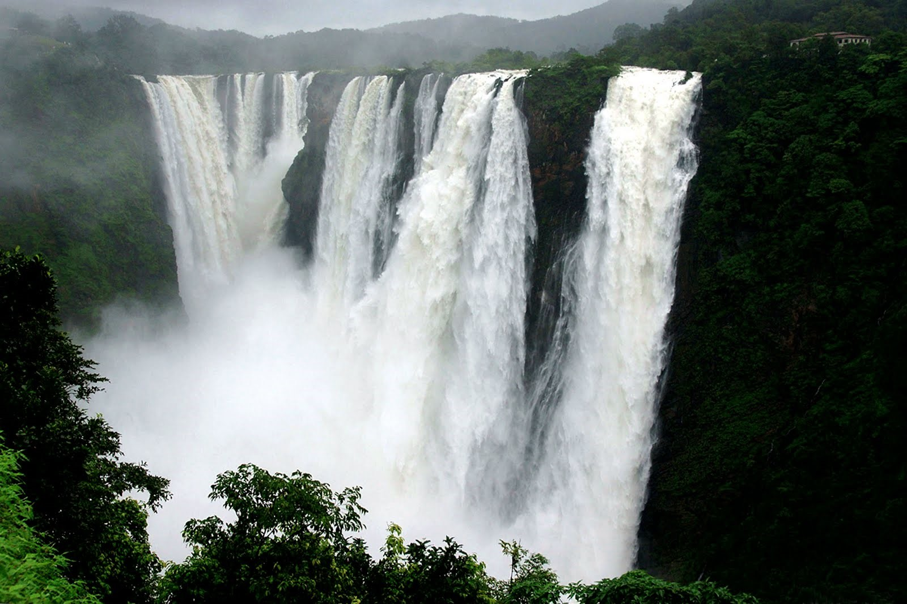

Location:Thoseghar, Satara, Maharashtra
Mountain range: Western Ghats
Timings: 8 AM to 5 PM.
Thoseghar Waterfall, is a scenic spot located near the small village of Thoseghar, 20 km from Satara city, at the edge of the Konkan region, in Western India. There are a series of waterfalls, some of them 15 to 20 metres and one of approx 200 metres in height. People come from all over Maharashtra to visit the area, especially during the rainy or monsoon season, July to November. Heavy rain falls during that season and because of this the falls have more water and are more spectacular. The immediate area is calm and quiet, with a clean lake and dark woods in a hilly area. The waterfall is drops through a series of cascades with a total height of about 500 m.
There is a picnic area and a newly constructed platform which gives a good view of the waterfall. There is no way to enter into the falls but one can go to the starting point of the falls. Water gathered from a wide range of mountains mostly from Kaas and Mahabaleshwar along with Panchgani starts flowing further via Thoseghar Waterfall. The origin of the Tarlee River is from these waterfalls.
There are few hotels and restaurants nearby for food and stay that make possible to eat veg and non-veg meal after visiting the area.
Thoseghar waterfalls can be reached using public transport, or by driving. There are regular buses from Swargate (Pune to Satara) and buses or rickshaws from Satara. A full view of the falls can be obtained by going to Chalkewadi where one can park their vehicles at a newly designated parking lot and then walking down the paved road for 0.5 km.
More Images:
{kind=link}
{kind=link}
{kind=link}
{kind=link}
{kind=link}